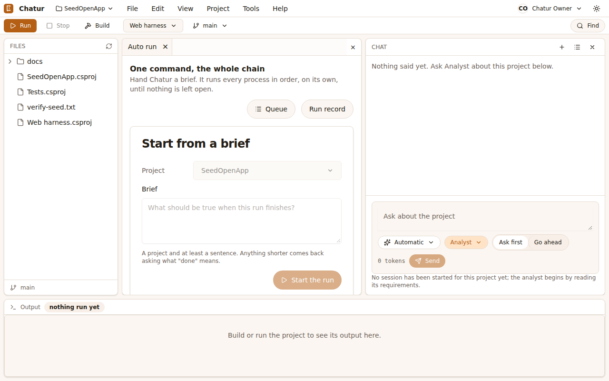
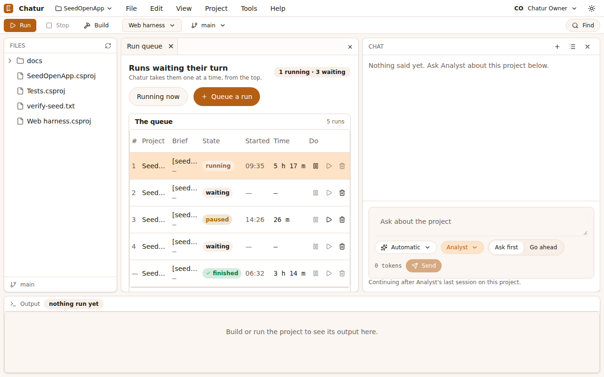
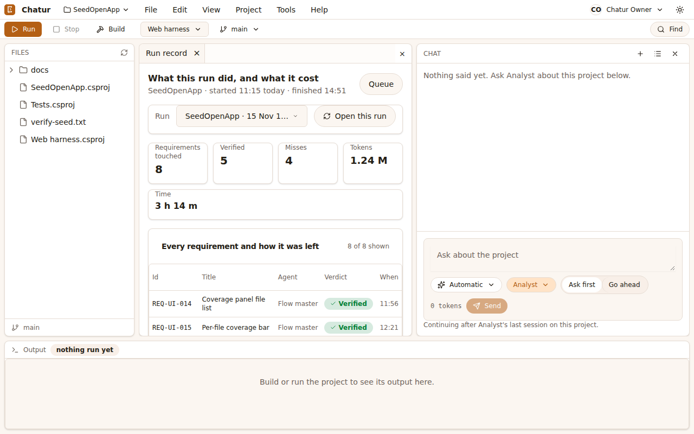

Chatur — Developer Guide
Chatur-P3-DevGuide.md| App | Chatur |
| Kind | app |
| Size | Large |
| Phase | 3 of 4 |
| Verified on | 2026-11-15 |
| Date | 2026-11-15 |
Architecture cheat-sheet#
flowchart LR
Link["ToolTabLink (route)"] --> Tabs["WorkbenchState (open tabs)"]
Menu["MenuBar, Project menu"] --> Tabs
Tabs --> Area["EditorArea (draws the active tab)"]
Area --> Page["AutoRun, RunQueue, RunReport"]
Page --> Act["AutoRunActions, RunQueueActions, RunReportActions"]
Act --> Runs["ProcessActions, ProcessRunActions (phase 2)"]
Act --> DB[("SQLite")]
Act --> Files["docs/metrics/*.jsonl"]
The three phase-3 screens are not pages of their own. Each opens as a tab inside the main window. A route such as /auto is a deep link handled by src/ChaturUI/Pages/ToolTabLink.razor.cs (OnAfterRenderAsync, line 44): it opens the tab through src/ChaturUI/Shell/WorkbenchState.cs and then goes on to /. src/ChaturUI/Shell/EditorArea.razor (the switch at line 43) draws the active tab's component.
| Layer | Project or folder | What lives here |
|---|---|---|
| Screens | src/ChaturUI/Pages | AutoRun, RunQueue (with QueueRunDialog), RunReport, each a .razor with a .razor.cs |
| Engine | src/Chatur.Core/AutoRun | AutoRunActions walks the chain; AutoRunStore holds the SQL; AutoRunViewBuilder builds what the screen shows; BackgroundAutoRunLauncher runs it off the screen |
| Queue | src/Chatur.Core/RunQueue | RunQueueActions; RequirementOrder picks the requirement a resumed run works from |
| Report | src/Chatur.Core/RunReports | RunReportActions and RunReportReader; read only |
| Database | src/ChaturDb/Scripts | DbUp scripts 0046 to 0057: AutoRun, AutoRunProcess, AutoRunEvent, RunQueueItem, ProcessRunStepWork, estimates |
Roles and menu map#
| Role | Test user | Menu items and the screen each opens |
|---|---|---|
| User | 1 (chatur-owner@techierathore.com) | Project → End-to-end run (/auto); Project → Run queue (/auto/queue); Project → Run record (/auto/report), which opens the Run report |
The items are in src/ChaturUI/Shell/MenuBar.razor, lines 156 to 158. Each calls WorkbenchState.OpenAutoRun, OpenRunQueue or OpenRunReport directly.
Screen-by-screen code map#
End-to-end run (/auto)#

Call chain: AutoRun.razor.cs:StartAsync → AutoRunActions.StartAsync → AutoRunStore.CreateAsync → AutoRun, AutoRunProcess and AutoRunEvent tables
The screen starts a run from a brief and then only watches it. The run itself goes on in a background task, so closing the tab does not stop it.
OnInitializedAsync (line 116) picks the selected project and calls LoadRunAsync (line 147). That takes the project's going run from AutoRunActions.CurrentAsync, or, when none is going, its newest run if that one is ready for the owner's acceptance test. PollAsync (line 163) then reads the run again every two seconds.
StartAsync (line 335) checks that a project is chosen and that the brief has at least 40 characters (AutoRunBrief.MinLength). AutoRunActions.StartAsync checks the same rule again, refuses a second going run on the same project, writes the run, and hands it to the launcher. The page then keeps the estimate the owner was shown (KeepStartEstimateAsync, line 278). A refusal is shown under the brief, and the brief stays filled.
Pause, Resume and Stop all go through ChangeAsync (line 374) to the action of the same name. Stop asks first, in a dialog.
Before a run exists, ChainRows (line 42) shows the planned chain from AutoRunActions.PlannedChain, with every process still to come.
| File and line | Function | Watch | Expected value |
|---|---|---|---|
src/ChaturUI/Pages/AutoRun.razor.cs:149 | LoadRunAsync | objRun | the going run, or null when the project has none |
src/ChaturUI/Pages/AutoRun.razor.cs:355 | StartAsync | objRun.State | Running, with a new AutoRunId |
src/Chatur.Core/AutoRun/AutoRunActions.cs:87 | StartAsync | result of GoingAsync | null; a row here means the start is refused |
src/Chatur.Core/AutoRun/AutoRunStore.cs:101 | CreateAsync | vId | the new AutoRun row; eight AutoRunProcess rows follow, each ToCome |
src/ChaturUI/Pages/AutoRun.razor.cs:175 | PollAsync | vNow.ProgressPercent, vNow.Now | a rising figure, and the agent, process and step being worked |
src/Chatur.Core/AutoRun/AutoRunViewBuilder.cs:46 | BuildAsync | vProcessRun | the process run the chain is on now |
Calculations on this screen: Elapsed (AutoRun.razor.cs:85) is the end time, or now, minus the start time. AutoRunViewBuilder.ProgressOf (AutoRunViewBuilder.cs:87) gives the bar's figure: finished processes, plus the share of done steps in the current process run, times 100, divided by the length of the chain; it is 100 once the run is ready for acceptance. BuildAsync (lines 51 to 59) adds up TokensOutSoFar over the chain's process runs. OpenRequirementReader.Count (OpenRequirementReader.cs:79) counts the open requirements by status. EstimateSoFarText (page line 62) sets the kept build estimate beside the measured figures; the two are never combined.
Run queue (/auto/queue)#

Call chain: RunQueue.razor.cs:LoadAsync → RunQueueActions.ListAsync → RunQueueActions.StartNextAsync → AutoRunActions.StartAsync → RunQueueItem and AutoRun tables
The queue lets one end-to-end run go at a time. A RunQueueItem row holds very little: the project, the brief, a status (Queued, Started or Removed), the id of the run it became, and the requirement a resumed run works from. Where a started run stands is always read from the run itself, in SnapshotAsync (src/Chatur.Core/RunQueue/RunQueueActions.cs:295), so the queue and the run cannot disagree. A started row whose run cannot be read shows as lost.
Reading the queue is also what moves it on. Every ListAsync call first runs StartNextAsync. The page calls it on opening and then every four seconds from a timer (cRefreshEvery, page line 15), so the next run starts without a click while the tab is open.
Adding a run is done in the dialog: QueueRunDialog.razor.cs:QueueAsync (line 127) calls RunQueueActions.QueueAsync, which inserts the row and reports whether the project already had an unfinished run in the queue. The brief needs 40 to 4000 characters.
Pause and Resume on a row (PauseAsync, ResumeAsync, page lines 177 and 182) pass through to the run's own pause and resume. Resuming while another run is going puts the row back to Queued, to wait its turn. Remove marks the row Removed and stops its run; a running or finished row cannot be removed.
All actions take one shared lock (Gate, line 21), so two readers cannot start two runs.
| File and line | Function | Watch | Expected value |
|---|---|---|---|
src/ChaturUI/Pages/RunQueue.razor.cs:76 | LoadAsync | objView.Items | unfinished runs in queue order, then finished runs, newest first |
src/Chatur.Core/RunQueue/RunQueueActions.cs:204 | StartNextAsync | vItems | no item Running, or the method returns here |
src/Chatur.Core/RunQueue/RunQueueActions.cs:252 | TryStartAsync | vRun.AutoRunId | the id of the run just started; written to the row on the next line |
src/Chatur.Core/RunQueue/RunQueueActions.cs:307 | SnapshotAsync | vState | Waiting, Running, Paused, Finished or Lost |
src/ChaturUI/Pages/QueueRunDialog.razor.cs:139 | QueueAsync | vAdded.ProjectAlreadyQueued | true when the project already had a run waiting or going |
src/Chatur.Core/RunQueue/RunQueueActions.cs:92 | QueueAsync | vId | the new RunQueueItem row, status Queued |
Calculations on this screen: CountText (RunQueue.razor.cs:33) counts running rows and waiting rows; a paused row counts as waiting. RunQueueActions.ToItem (RunQueueActions.cs:330) computes elapsed time as the run's end, or now, minus its start. SnapshotAsync (line 308) numbers the unfinished rows. ElapsedText (page line 268) words the time as hours and minutes. EstimateTextOf (page line 112) shows the middle build figure of the estimate the run was queued with; it reads the kept estimate and never works one out again.
Run report (/auto/report)#

Call chain: RunReport.razor.cs:LoadAsync → RunReportActions.ReportAsync → RunReportActions.AutoReportAsync → AutoRunProcess, AutoRunEvent and ProcessRunVerdict tables, plus docs/metrics/runs.jsonl and misses.jsonl
The report is read only, and every call reads again. OnInitializedAsync (line 89) asks RunReportActions.RunsAsync for the list of runs and loads the newest. The owner can pick an earlier one (OnPickedAsync, line 115).
The list has two sources. Runs Chatur carried out come from AutoRun rows and have the key auto- followed by the row id. End-to-end runs found only in the project's runs.jsonl (command auto) are listed beside them, keyed by their start time.
ReportAsync (src/Chatur.Core/RunReports/RunReportActions.cs:66) branches on that key:
- An
auto-key goes toAutoReportAsync. The requirements are the last verdict each one was left at by the run's process runs (VerdictsAsync, line 170). Waits and retries come from the run's own record. Misses and tokens come from the measurement files, limited to the time the run was going. - Any other key goes to
RunReportReader.Report(RunReportReader.cs:39), which builds the whole report fromruns.jsonl,gates.jsonlandmisses.jsonl.
Titles and owning agents come from the board (RequirementBoardActions.LoadAsync). A figure that no record carries is shown as "not recorded", never as zero.
LoadEstimateAsync (page line 160) reads the estimate an auto- run kept and asks EstimateActions.AgainstActualAsync to set it beside what was measured.
| File and line | Function | Watch | Expected value |
|---|---|---|---|
src/ChaturUI/Pages/RunReport.razor.cs:93 | OnInitializedAsync | objRuns[0].Key | auto-{id} for a run Chatur carried out |
src/ChaturUI/Pages/RunReport.razor.cs:129 | LoadAsync | objReport | the report; null when the run is not the selected project's |
src/Chatur.Core/RunReports/RunReportActions.cs:74 | ReportAsync | vRuns.Length | the number of lines in runs.jsonl; 0 when the file is missing |
src/Chatur.Core/RunReports/RunReportActions.cs:110 | AutoReportAsync | vVerdicts | one row per requirement the run graded |
src/Chatur.Core/RunReports/RunReportActions.cs:118 | AutoReportAsync | vCost.TokensIn, vCost.TokensOut | totals of the records started inside the run's time; null when none carries the figure |
src/ChaturUI/Pages/RunReport.razor.cs:185 | LoadEstimateAsync | objAgainst | the kept estimate against the measured figures |
Calculations on this screen: RunReportActions.WaitsOf (RunReportActions.cs:136) measures each usage-limit wait, from the wait to the entry that ended it. AutoReportAsync (line 115) computes the run's duration as end minus start minus the time waited, sums tokens in and out (line 119) and sums the retries of the chain (line 132). RunReportReader.CostBetween (RunReportReader.cs:105) adds tokens and seconds per model. On the page, Lay (RunReport.razor.cs:197) builds the Total row with SumOrNull (line 231), which gives a sum only when every model's figure was recorded. VerdictCounts (line 71) counts requirements per verdict.
Cross-cutting flows#
For sign-in, configuration and logging: See docs/Chatur-DevGuide.md, Cross-cutting flows.
The end-to-end engine#
Call chain: AutoRunActions.StartAsync → BackgroundAutoRunLauncher.Launch → AutoRunActions.AdvanceAsync → CarryOnAsync → RunCurrentProcessAsync → ProcessActions.StartAsync and ProcessRunActions.AdvanceUnattendedAsync
Start. AutoRunStore.CreateAsync writes the AutoRun row in state Running and one AutoRunProcess row per process of the chain. The launcher (src/Chatur.Core/AutoRun/BackgroundAutoRunLauncher.cs:28) starts one background task per run, in its own service scope. AdvanceAsync takes a lock per run, so only one loop carries a run on.
The chain of eight processes. AutoRunChain.Processes (AutoRunChain.cs:14) lists them in order: day1-greenfield, split-brd, mockups, deploy-checklist, build-phase, verify-phase, fix-issues, refresh-status. For each one, EnsureProcessRunAsync starts an ordinary phase-2 process run and DriveProcessRunAsync carries it to its end. An owner stop inside a process is answered yes by the run itself and written into the run's record. A check that fails stops the whole run with the reason. After the last process the run goes to ReadyForAcceptance and nothing more is run. MarkCompleteAsync refuses while any requirement is open.
Pause and stop. PauseAsync and StopAsync only change the run's state in the database. The loop gives way at the next step boundary: before each step, AdvanceLockedAsync calls the ShouldYield check from PolicyFor, which reads that state. A step already being worked is finished first on pause. On stop, StopProcessRunAsync ends the current process run. ResumeAsync sets Running again and launches the loop on the same step.
Waiting out a usage limit. ProcessRunActions.ExecuteUnattendedAsync marks the step's model calls as made for a run. AgentActions.SendAsync then raises a provider's rate limit as ModelUsageLimitException instead of showing it as a note. BeginLimitWaitAsync sets the run to WaitingForLimit with a resume time: the provider's own figure, else 30 minutes, never more than 12 hours (AutoRunOptions). WaitOutAsync sleeps in 15-second slices and checks each time whether the owner paused or stopped. The run then carries on by itself on the same step. A stalled or crashed step is retried up to three times, with a growing pause, in RetryAsync.
| File and line | Function | Watch | Expected value |
|---|---|---|---|
src/Chatur.Core/AutoRun/AutoRunActions.cs:278 | RunCurrentProcessAsync | vProcess.ProcessCode | the chain's code at aRow.CurrentProcess |
src/Chatur.Core/AutoRun/AutoRunActions.cs:311 | EnsureProcessRunAsync | vStarted.RunId | the process run for this place in the chain |
src/Chatur.Core/AutoRun/AutoRunActions.cs:358 | DriveProcessRunAsync | vView.State | Finished to go on to the next process |
src/Chatur.Core/ProcessRuns/ProcessRunActions.cs:285 | AdvanceLockedAsync | result of vShouldYield() | false while the run is Running; true after Pause or Stop |
src/Chatur.Core/Agent/AgentActions.cs:392 | SendAsync | vUsageLimit | set when the provider reported a rate limit during a run |
src/Chatur.Core/AutoRun/AutoRunActions.cs:476 | BeginLimitWaitAsync | vUntil | the time the run carries on, saved as AutoRun.ResumeAtUtc |
The queue starts the next run#
RunQueueActions.StartNextAsync (RunQueueActions.cs:201) runs at the start of every ListAsync. If any row is running it does nothing. Otherwise it tries each waiting row in order (TryStartAsync, line 242). A row that already has a run is resumed; a new row calls AutoRunActions.StartAsync, stores the new run's id on the row, and carries the queued estimate over to the run. A project that already has a run going is skipped and stays waiting.
Nothing in the background calls ListAsync. The next run starts when a Run queue tab is open and its four-second timer fires.
Where the run report reads its measurements#
RunReportActions.ReadAsync (RunReportActions.cs:188) reads runs.jsonl, misses.jsonl and gates.jsonl from the selected project's docs/metrics folder; a missing file reads as empty. The records are written elsewhere: ProcessRunActions.EndRunAsync appends one runs.jsonl record per process run through MeasurementActions.AppendAsync (src/Chatur.Core/Measurements/MeasurementActions.cs:196). For a run Chatur carried out, verdicts come from the ProcessRunVerdict table, and waits and retries from AutoRunEvent and AutoRunProcess.
Known issues#
- A run cut off by closing Chatur resumes when End-to-end run opens.
AutoRunActions.CurrentAsync(src/Chatur.Core/AutoRun/AutoRunActions.cs:139) launches the run again and adds a Retry entry to its record; until that screen is opened the run stands still. - Fixed on 2026-11-15, REQ-UI-055: the web test copy now releases a closed page at once (
src/Chatur.WebHarness/Program.cs:50,DisconnectedCircuitMaxRetained = 0; testtests/verify/deep-link-after-closed-pages.spec.ts). Before that, End-to-end run could stand blank for seconds after a test run.